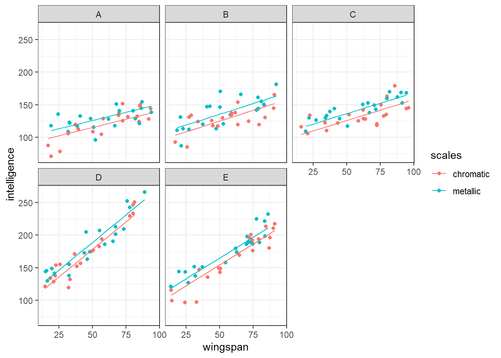

library(lmerTest)6 Significance testing
Unlike standard linear models, p-values are not calculated automatically for a mixed effects model in lme4, as you may have noticed in the previous section of the materials. There is a little extra work and thought that goes into testing significance for these models.
The reason for this is the inclusion of random effects, and the way that random effects are estimated. When using partial pooling to estimate the random effects, there is no way to precisely determine the number of degrees of freedom.
This matters, because we need to know the degrees of freedom to calculate p-values in the way we usually do for a linear model (see the drop-down box below if you want a more detailed explanation for this).
Degrees of freedom & p-values
The degrees of freedom in a statistical analysis refers to the number of observations in the dataset that are free to vary (i.e., free to take any value) once the necessary parameters have been estimated. This means that the degrees of freedom varies with both the sample size, and the complexity of the model you’ve fitted.
Why does this matter? Well, each test statistic (such as F, t, chi-square etc.) has its own distribution, from which we can derive the probability of that statistic taking a certain value. That’s precisely what a p-value is: the probability of having collected a sample with this particular test statistic, if the null hypothesis were true.
Crucially, the exact shape of this distribution is determined by the number of degrees of freedom. This means we need to know the degrees of freedom in order to calculate the correct p-value for each of our test statistics.
However, when we fit a mixed effects model, we still want to be able to discuss significance of a) our overall model and b) individual predictors within our model.
6.1 Multiple methods for assessing significance
So, how do we get around the degrees of freedom problem?
There are several methods for doing this, and different methods for fixed vs random effects. But we’ll work through some of the most popular together, including:
- Likelihood ratio tests
- Approximations of degrees of freedom
- t-as-z approximations
6.2 Method 1: Approximation of the degrees of freedom
We’ll start by exploring the most intuitive of the three methods.
Put simply, this approach involves making an educated guess about the degrees of freedom with some formulae, and then deriving a p-value as we usually would. This lets us obtain p-values for any t- and F-values that are calculated, with just the one extra step compared to what we’re used with linear models.
A major caveat
Despite being very simple and intuitive, there is a downside: this method does not provide p-values for random effects, only for fixed effects.
For this approach, we will use the companion package to lme4, a package called lmerTest. It provides an “updated” version of the lmer() function, one that can approximate the number of degrees of freedom, and thus provide estimated p-values.
Now, whenever you use the lmer() function, R will automatically use the version from the lmerTest package. (You can prevent it from doing so by typing lme4::lmer() instead.)
The lmerTest package uses the Satterthwaite approximation by default. This particular approximation is appropriate for mixed models that are fitted using either MLE or ReML, making it pretty flexible.
Using this new package, let’s look again at our random slopes & intercepts model for the sleepstudy dataset:
# refit the random intercepts & random slopes model
# using lmerTest instead of lme4
lme_sleep2 <- lmer(Reaction ~ Days + (1 + Days|Subject),
data = sleepstudy)The new version of the lmer function fits a very similar model object to before, except now it contains the outputs of a number of calculations that are required for the Satterthwaite approximation already built in.
This means that we can now use the anova function from the lmerTest package to produce an analysis of variance table. This gives us an estimate for the F-statistic and associated p-value for our fixed effect of Days:
anova(lme_sleep2)Type III Analysis of Variance Table with Satterthwaite's method
Sum Sq Mean Sq NumDF DenDF F value Pr(>F)
Days 30031 30031 1 17 45.853 3.264e-06 ***
---
Signif. codes: 0 '***' 0.001 '**' 0.01 '*' 0.05 '.' 0.1 ' ' 16.2.1 Using the Kenward-Roger approximation
Although the Satterthwaite approximation is the lmerTest default, another option called the Kenward-Roger approximation also exists. It’s less popular than Satterthwaite because it’s a bit less flexible (it can only be applied to models fitted with ReML).
If you wanted to switch to the Kenward-Roger approximation, you can do it easily by specifying the ddf argument:
anova(lme_sleep2, ddf="Kenward-Roger")Type III Analysis of Variance Table with Kenward-Roger's method
Sum Sq Mean Sq NumDF DenDF F value Pr(>F)
Days 30031 30031 1 17 45.853 3.264e-06 ***
---
Signif. codes: 0 '***' 0.001 '**' 0.01 '*' 0.05 '.' 0.1 ' ' 1In reality, though, chances are that you’ll just stick with the Satterthwaite default if you plan to use approximations for your own analyses. Statisticians have debated the relative merits of Satterthwaite vs K-R, but the differences only really tend to emerge under specific conditions. Here, it’s given us the same result.
6.3 Method 2: Likelihood ratio tests (LRTs)
When introducing degrees of freedom approximations above, I mentioned a major caveat to them: they only work for testing fixed effects. So, now we’re going to look at an alternative method, which we can use for testing both fixed and random effects.
This is a more flexible and general method for assessing significance, called a likelihood ratio test (LRT). An LRT is used to compare goodness-of-fit between two models, and crucially, doesn’t require us to know the degrees of freedom of those model(s).
What makes this test a “likelihood ratio”?
Remember that mixed effects models are fitted by maximising their likelihood, which is defined as the joint probability of the sample given a particular set of parameters (i.e., how likely is it that this particular set of data points would occur, given a model with this equation?).
Each distinct mixed model that is fitted to a given dataset therefore has its own value of likelihood. When we want to compare two models, we can calculate the ratio of their individual likelihoods. This ratio can be thought of as a statistic of its own (akin to the t- or F-statistic), and approximately follows a chi-square distribution.
To determine whether this ratio is significantly different from 1, we calculate the degrees of freedom for the analysis - which is equal to the difference in the number of parameters in the model - to find the corresponding chi-square distribution, from which we can then calculate a p-value.
Crucially, we are only able to use this sort of test when one of the two models that we are comparing is a “simpler” version of the other, i.e., one model has a subset of the parameters of the other model.
So while we could perform an LRT just fine between these two models: Y ~ A + B + C and Y ~ A + B + C + D, or between any model and the null (Y ~ 1), we would not be able to use this test to compare Y ~ A + B + C and Y ~ A + B + D.
We can use LRTs to assess the significance of pretty much any individual effect (random or fixed) in our mixed effects model, by comparing versions of the model with versus without that predictor. We can also use LRTs to assess the fit of the model as a whole, by comparing it to the null model.
6.3.1 Running LRTs
Since LRTs involve making a comparison between two models, we must first decide which models we’re comparing, and check that one model is a “subset” of the other.
Let’s return to our sleepstudy dataset, and fit two models - one with random intercepts only, and one with random intercepts and random slopes.
# load lme4, and the dataset from the package
library(lme4)
data("sleepstudy")
# fit the random intercepts model
lme_sleep1 <- lmer(Reaction ~ Days + (1|Subject),
data = sleepstudy)
# fit the random intercepts & slopes model
lme_sleep2 <- lmer(Reaction ~ Days + (1 + Days|Subject),
data = sleepstudy)Now, we will use the old faithful anova function. Rather than putting just one model in, however, we will include both the models that we want to compare, listing them one after another.
Note
Note the warning/information message R provides when we use the anova function this way: “refitting model(s) with ML (instead of REML)”.
R, or more specifically the anova function, has done something helpful for us here. For reasons that we won’t go into too much (though, feel free to ask if you’re curious!), we cannot use LRTs to compare models that have been fitted with the ReML method, even though this is the standard method for the lme4 package. So we must refit the model with ML.
(Incidentally, we could have chosen to fit the models manually with ML, if we’d wanted to. The lmer function takes an optional REML argument that we can set to FALSE - it’s set to TRUE by default. But letting the anova function do it for us is much easier!)
anova(lme_sleep2, lme_sleep1)refitting model(s) with ML (instead of REML)Data: sleepstudy
Models:
lme_sleep1: Reaction ~ Days + (1 | Subject)
lme_sleep2: Reaction ~ Days + (1 + Days | Subject)
npar AIC BIC logLik deviance Chisq Df Pr(>Chisq)
lme_sleep1 4 1802.1 1814.8 -897.04 1794.1
lme_sleep2 6 1763.9 1783.1 -875.97 1751.9 42.139 2 7.072e-10 ***
---
Signif. codes: 0 '***' 0.001 '**' 0.01 '*' 0.05 '.' 0.1 ' ' 1This table gives us the chi-square statistic (i.e., the likelihood ratio) and an associated p-value.
Here, we have a large chi-square statistic and a small p-value. This tells us that dropping the random slopes term from our model does have a significant effect - in other words, the random slopes term is meaningful and useful when predicting reaction times.
We can also test the significance of our fixed effect of Days. We keep the structure of random effects the same, and replace our fixed effect with 1.
lme_random <- lmer(Reaction ~ 1 + (1 + Days|Subject), data = sleepstudy)
anova(lme_sleep2, lme_random)refitting model(s) with ML (instead of REML)Data: sleepstudy
Models:
lme_random: Reaction ~ 1 + (1 + Days | Subject)
lme_sleep2: Reaction ~ Days + (1 + Days | Subject)
npar AIC BIC logLik deviance Chisq Df Pr(>Chisq)
lme_random 5 1785.5 1801.4 -887.74 1775.5
lme_sleep2 6 1763.9 1783.1 -875.97 1751.9 23.537 1 1.226e-06 ***
---
Signif. codes: 0 '***' 0.001 '**' 0.01 '*' 0.05 '.' 0.1 ' ' 1Once again, there is a significant difference between the two models, as seen by our small p-value. This tells us that the fixed effect of days is a significant predictor of reaction time.
6.4 Method 3: t-to-z approximations
The third and final method that we’ll touch on in this course is another form of approximation - here, we make use of the Wald t-values, which are reported as standard in the lme4 output.
Specifically, we can choose to treat these t-values as if they were z-scores instead, if our sample size is considered large enough. And, because z-scores are standardised, we don’t need any degrees of freedom information to derive a p-value - we can just read them directly out of a table (or get R to do it for us).
The logic of using z-scores instead
A z-score is different from a statistic such as t or F. They’re standardised, because they’re measured in standard deviations - i.e., a z-score of 1.3 tells you that you are 1.3 standard deviations away from the mean.
This is helpful for deriving a p-value without degrees of freedom, but it raises the question: why is it okay to treat t-values as z-scores?
The logic here is that the t distribution actually begins to approximate (i.e., match up with) the z distribution as the sample size increases. Officially, when the sample size is infinite, the two distributions are identical. So, with a sufficiently large sample size, we can “pretend” or “imagine” that the Wald t-values are actually z-distributed, giving us p-values.
Unfortunately, there are no formal guidelines to tell you whether your dataset is “large enough” to do this. It will depend on the number and type of predictors in your model. Plus, the t-to-z approximation is considered to be “anti-conservative” - in other words, there’s a higher chance of false positives than with other methods.
Some researchers adapt the t-to-z approximation approach a little to help with this; instead of explicitly calculating p-values, they instead use a rule of thumb that any Wald t-value greater than 2 is large enough to be considered significant. This is quite a strict threshold, so it can help to filter out some of the false positives or less convincing results.
6.4.1 Calculating p-values using z-scores
Let’s look again at the summary output for our model:
summary(lme_sleep2)Linear mixed model fit by REML. t-tests use Satterthwaite's method [
lmerModLmerTest]
Formula: Reaction ~ Days + (1 + Days | Subject)
Data: sleepstudy
REML criterion at convergence: 1743.6
Scaled residuals:
Min 1Q Median 3Q Max
-3.9536 -0.4634 0.0231 0.4634 5.1793
Random effects:
Groups Name Variance Std.Dev. Corr
Subject (Intercept) 612.10 24.741
Days 35.07 5.922 0.07
Residual 654.94 25.592
Number of obs: 180, groups: Subject, 18
Fixed effects:
Estimate Std. Error df t value Pr(>|t|)
(Intercept) 251.405 6.825 17.000 36.838 < 2e-16 ***
Days 10.467 1.546 17.000 6.771 3.26e-06 ***
---
Signif. codes: 0 '***' 0.001 '**' 0.01 '*' 0.05 '.' 0.1 ' ' 1
Correlation of Fixed Effects:
(Intr)
Days -0.138Calculating the p-value for a z-score can be done quickly in R using the pnorm function. We include the z-score (or, here, the t-value that we are treating as a z-score) as the value for our argument q. To make this a two-tailed test, we have to set lower.tail to FALSE, and multiply the answer by 2.
2*pnorm(q = 6.771, lower.tail = FALSE)[1] 1.278953e-11If we input the t-value for our Days fixed effect, we can see that it gives us a very small p-value. This p-value of 1.28 x 10-11 is quite a bit smaller than the one that our Satterthwaite degrees of freedom approximation provided (3.26 x 10-6) - an example of how this t-to-z approximation is more generous. However, in this case it’s very clear that the Days effect definitely is significant, whichever way we test it, so it’s perhaps not a concern.
And that, in fact, leads me to a final point I’d like to make:
One of the main reasons I’ve bothered to include all three of these methods here is because there’s nothing stopping you using more than one approach when it comes to testing your own models. If you do use multiple methods, and they agree/lead you to the same conclusion, then that increases your overall confidence in that conclusion. If they disagree, then it’s better that you know that your result might not be reliable, and you can do some further investigations to figure out why (e.g., perhaps it’s a statistical power issue).
6.5 Exercise 1 - Dragons revisited
Let’s return to the dataset from our previous example, our dragons dataset.
Previously, we fit a mixed model to this dataset that included response variable intelligence, fixed effects of wingspan, scales and wingspan:colour, and two random effects: random intercepts by mountain, and random slopes for wingspan by mountain.
dragons <- read_csv("data/dragons.csv")Rows: 200 Columns: 5
── Column specification ────────────────────────────────────────────────────────
Delimiter: ","
chr (2): scales, mountain
dbl (3): dragon, wingspan, intelligence
ℹ Use `spec()` to retrieve the full column specification for this data.
ℹ Specify the column types or set `show_col_types = FALSE` to quiet this message.lme_dragons <- lmer(intelligence ~ wingspan*scales + (1 + wingspan|mountain),
data=dragons)Now, test the significance of this model and its parameters using the methods shown above. Think about:
- whether any/all of our fixed effects are significant
- whether either of our random effects are significant
- whether the three methods lead you to the same conclusions, and if not, why this might be
Worked answer
Let’s start by using an LRT to test the overall significance of our model.
# construct a null model
lme_dragons_null <- lm(intelligence ~ 1, data = dragons)
# compare the full and null models
anova(lme_dragons, lme_dragons_null)refitting model(s) with ML (instead of REML)Data: dragons
Models:
lme_dragons_null: intelligence ~ 1
lme_dragons: intelligence ~ wingspan * scales + (1 + wingspan | mountain)
npar AIC BIC logLik deviance Chisq Df Pr(>Chisq)
lme_dragons_null 2 1997.0 2003.6 -996.51 1993.0
lme_dragons 8 1647.8 1674.2 -815.92 1631.8 361.18 6 < 2.2e-16 ***
---
Signif. codes: 0 '***' 0.001 '**' 0.01 '*' 0.05 '.' 0.1 ' ' 1It’s significant. Something in our model is doing something helpful. A really good start!
Next, we can use LRTs to check the significance of our individual random effects. We’ll build some new models - one with random intercepts only and one with random slopes only - and compare them to the full model. Remember that for these models to be comparable, we need to keep the fixed effects the same.
lme_dragons_dropslope <- lmer(intelligence ~ wingspan*scales + (1|mountain),
data=dragons)
lme_dragons_dropint <- lmer(intelligence ~ wingspan*scales + (0 + wingspan|mountain),
data=dragons)Now, we can compare both of these new models to our original model, using anova:
anova(lme_dragons, lme_dragons_dropint)refitting model(s) with ML (instead of REML)Data: dragons
Models:
lme_dragons_dropint: intelligence ~ wingspan * scales + (0 + wingspan | mountain)
lme_dragons: intelligence ~ wingspan * scales + (1 + wingspan | mountain)
npar AIC BIC logLik deviance Chisq Df Pr(>Chisq)
lme_dragons_dropint 6 1643.9 1663.7 -815.95 1631.9
lme_dragons 8 1647.8 1674.2 -815.92 1631.8 0.0691 2 0.9661anova(lme_dragons, lme_dragons_dropslope)refitting model(s) with ML (instead of REML)Data: dragons
Models:
lme_dragons_dropslope: intelligence ~ wingspan * scales + (1 | mountain)
lme_dragons: intelligence ~ wingspan * scales + (1 + wingspan | mountain)
npar AIC BIC logLik deviance Chisq Df Pr(>Chisq)
lme_dragons_dropslope 6 1737.9 1757.7 -862.95 1725.9
lme_dragons 8 1647.8 1674.2 -815.92 1631.8 94.057 2 < 2.2e-16
lme_dragons_dropslope
lme_dragons ***
---
Signif. codes: 0 '***' 0.001 '**' 0.01 '*' 0.05 '.' 0.1 ' ' 1These results would seem to suggest that while the random slopes are significant, the random intercepts are not.
This opens up a bit of a debate about whether it’s a good idea to drop a random effect from a model if it’s not significant. You can, of course, use any model you like to describe your dataset. But if you’re not pushed for statistical power, it can be worth leaving non-significant random effects in a model, so that it better reflects your experimental design. In this case, I would personally opt for leaving the random intercepts in my final model, because it’s quite unusual to see random slopes on their own. But this is, of course, personal choice!
Let’s move on to thinking about our fixed effects. Following the same LRT procedure, we can construct some new models - one where we’ve dropped the wingspan:scales interaction, and two more where we exclude wingspan or scales entirely (plus the interaction in both cases). We’ll keep the random effects the same across these models.
# testing the interaction term
lme_dragons_dropx <- lmer(intelligence ~ wingspan + scales + (1 + wingspan|mountain),
data=dragons)
anova(lme_dragons, lme_dragons_dropx)refitting model(s) with ML (instead of REML)Data: dragons
Models:
lme_dragons_dropx: intelligence ~ wingspan + scales + (1 + wingspan | mountain)
lme_dragons: intelligence ~ wingspan * scales + (1 + wingspan | mountain)
npar AIC BIC logLik deviance Chisq Df Pr(>Chisq)
lme_dragons_dropx 7 1647.2 1670.3 -816.60 1633.2
lme_dragons 8 1647.8 1674.2 -815.92 1631.8 1.3648 1 0.2427# testing the main effect of scales
lme_dragons_dropwing <- lmer(intelligence ~ scales + (1 + wingspan|mountain),
data=dragons)Warning in checkConv(attr(opt, "derivs"), opt$par, ctrl = control$checkConv, :
Model failed to converge with max|grad| = 0.003579 (tol = 0.002, component 1)anova(lme_dragons, lme_dragons_dropwing)refitting model(s) with ML (instead of REML)Data: dragons
Models:
lme_dragons_dropwing: intelligence ~ scales + (1 + wingspan | mountain)
lme_dragons: intelligence ~ wingspan * scales + (1 + wingspan | mountain)
npar AIC BIC logLik deviance Chisq Df Pr(>Chisq)
lme_dragons_dropwing 6 1653.5 1673.2 -820.73 1641.5
lme_dragons 8 1647.8 1674.2 -815.92 1631.8 9.6251 2 0.008127
lme_dragons_dropwing
lme_dragons **
---
Signif. codes: 0 '***' 0.001 '**' 0.01 '*' 0.05 '.' 0.1 ' ' 1# testing the main effect of wingspan
lme_dragons_dropscale <- lmer(intelligence ~ wingspan + (1 + wingspan|mountain),
data=dragons)Warning in checkConv(attr(opt, "derivs"), opt$par, ctrl = control$checkConv, :
unable to evaluate scaled gradientWarning in checkConv(attr(opt, "derivs"), opt$par, ctrl = control$checkConv, :
Model failed to converge: degenerate Hessian with 1 negative eigenvaluesWarning: Model failed to converge with 1 negative eigenvalue: -2.6e+00anova(lme_dragons, lme_dragons_dropscale)refitting model(s) with ML (instead of REML)Data: dragons
Models:
lme_dragons_dropscale: intelligence ~ wingspan + (1 + wingspan | mountain)
lme_dragons: intelligence ~ wingspan * scales + (1 + wingspan | mountain)
npar AIC BIC logLik deviance Chisq Df Pr(>Chisq)
lme_dragons_dropscale 6 1673.6 1693.3 -830.78 1661.6
lme_dragons 8 1647.8 1674.2 -815.92 1631.8 29.724 2 3.512e-07
lme_dragons_dropscale
lme_dragons ***
---
Signif. codes: 0 '***' 0.001 '**' 0.01 '*' 0.05 '.' 0.1 ' ' 1Taken together, these LRTs suggest that although the interaction of wingspan:scales is not a particularly useful or significant predictor, the two main effects are.
Comfortingly, this aligns with what we see in an analysis of variance table using a Satterthwaite degrees of freedom approximation, which shows overall that there seem to be main effects though no significant interaction. The p-values are not the same - we wouldn’t expect them to be, they’re calculated very differently - but it’s a relief that the overall effect is robust across methods:
anova(lme_dragons)Type III Analysis of Variance Table with Satterthwaite's method
Sum Sq Mean Sq NumDF DenDF F value Pr(>F)
wingspan 3059.70 3059.70 1 3.992 16.8632 0.01484 *
scales 1923.44 1923.44 1 188.765 10.6009 0.00134 **
wingspan:scales 242.84 242.84 1 188.380 1.3384 0.24878
---
Signif. codes: 0 '***' 0.001 '**' 0.01 '*' 0.05 '.' 0.1 ' ' 1And, indeed, we would draw the same overall conclusion using t-to-z approximations as well (using the t-values, extracted from the output of the summary function). Excellent news.
# interaction term
2*pnorm(q = -1.157, lower.tail = FALSE)[1] 1.752728# scales main effect
2*pnorm(q = 3.256, lower.tail = FALSE)[1] 0.001129938# wingspan main effect
2*pnorm(q = 4.244, lower.tail = FALSE)[1] 2.195704e-05On the basis of these results, you could choose to refine your model slightly, eliminating the unhelpful wingspan:scales interaction. As discussed above, you could also choose to drop the random intercepts from the model, but that is a little more contentious. I’ll keep it for now, making lme_dragons_dropx the working minimal model.
We can visualise that like so:
ggplot(dragons, aes(x = wingspan, y = intelligence, colour = scales)) +
facet_wrap(vars(mountain)) +
geom_point() +
geom_line(data = augment(lme_dragons_dropx), aes(y = .fitted))
6.6 Summary
There are multiple ways to assess the significance of effects in a mixed effects model, which can aid you in determining which predictors are required in your analysis. This section introduces you to a few of them.
The most versatile of these methods - and one which is worth your time, even if the learning curve is slightly steeper - is likelihood ratio tests (LRTs). LRTs can be used for assessing the significance of random effects as well as fixed effects, and of the full model versus the null.
If you’re interested in doing further reading on this topic, then this article has a nice comparison of the methods discussed above, including how they perform in terms of type I (false positive) error rates.
Key Points
- Calculating p-values for mixed effects models is tricky, as there is no precise number of degrees of freedom
- To calculate p-values for random and/or fixed effects, likelihood ratio tests can be used
- Approximations of degrees of freedom (Satterthwaite and/or Kenward-Roger) or the t-as-z approximation can also be used to estimate p-values for fixed effects in mixed models